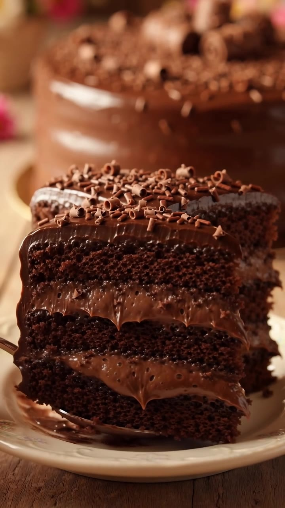
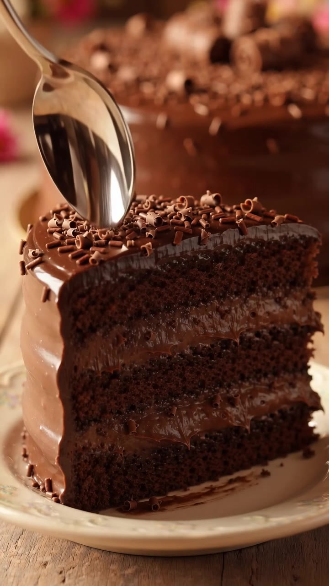
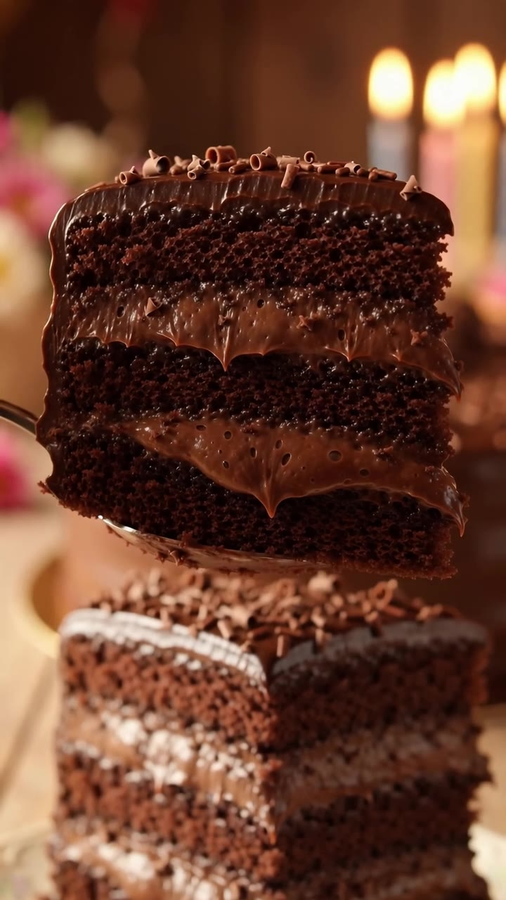

Bolo de chocolate recheado com raspas de chocolate
Bolo de chocolate recheado com brigadeiro cremoso, coberto com ganache e raspas de chocolate. Massa fofinha e molhadinha, perfeito para aniversário e fim de semana.

12 fatias · forma redonda de 22 cm · toque para marcar o que já separou
Este é aquele bolo de chocolate de festa que todo mundo ama: massa fofinha e úmida, camadas generosas de brigadeiro cremoso, cobertura de ganache brilhante e muitas raspas de chocolate por cima. Parece difícil, mas é tudo feito com ingredientes de mercado e técnicas simples. O segredo está na calda, que deixa a massa molhadinha, e em deixar o bolo descansar na geladeira antes de cortar, para as camadas ficarem bonitas.
Modo de preparo- Bata os ovos com o açúcar por 5 minutos, até ficar claro e fofo. Junte o óleo e o leite morno.
- Desligue a batedeira e misture delicadamente a farinha e o chocolate peneirados. Por último, misture o fermento.
- Asse em forma redonda de 22 cm untada e enfarinhada, em forno preaquecido a 180 °C, por 35 a 40 minutos (teste do palito). Espere esfriar totalmente.
- Recheio: cozinhe o leite condensado, o chocolate e a manteiga em fogo baixo, mexendo sem parar, até engrossar (cerca de 10 minutos). Desligue, misture o creme de leite e deixe esfriar.
- Cobertura: derreta o chocolate com o creme de leite no micro-ondas, de 30 em 30 segundos, mexendo, até ficar liso. Deixe esfriar até ficar cremosa.
- Corte o bolo em 2 ou 3 discos. Molhe cada disco com a calda e intercale com o recheio.
- Cubra o bolo todo com a ganache e finalize com raspas de chocolate feitas com um descascador de legumes.
- Leve à geladeira por 2 horas antes de servir.


Publicada em 17 de novembro de 2026 · Tempo total: 1 h 20 min · Imagem ilustrativa criada com IA.
Conta pra gente como ficou! Deixe um comentário, mande uma foto do seu resultado ou marque @melhores.receitas126 no seu post.